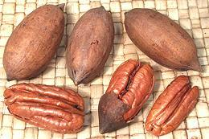

SAFARI
Users
Bayberry Family
[Wax-myrtle, Bay-rum tree, Candleberry, Sweet Gale, Myricaceae]
A small family of waxy aromatic shrubs with three genera, two
of which (Comptonia and Myrica) have some culinary
application. Most Myrica species are used mainly for production
of wax, insect repellents and medicinals, but one is of culinary
importance in China.
Bayberry[Chinese Bayberry, Japanese Bayberry, Red Bayberry, or Chinese strawberry tree; Yangmei (China); Yamamomo (Japan); Myrica rubra]
Native to China, but extending into Japan and Southeast Asia, this
subtropical tree produces edible fruit ranging from white through
crimson to dark purple-red. The fruit is roughly 1 inch diameter,
both sweet and very tart, with a single large seed in the center.
The seed is not of culinary use. The fruit may be eaten fresh, dried,
canned or steeped in alcoholic beverages. The juice is marketed in
Europe as Yumberry®. Various parts of the tree and fruit show
medicinal potential and are being investigated.
Photo © Zeping Yang from
http://www.flickr.com/photos/zeping/ - attribution required.
Sweetfern[Redneck reefer, Sweet bush, genus Comptonia sp. peregrina] Not, of course, a fern, but with fern-like leaves, this plant is native to eastern North America from southern Quebec to northern Georgia. Buds, when smoked, are reputed to be a mild relaxant, and its presence in the U.S. Southeast accounts for the name "redneck reefer". The nuts are like tiny pointy acorns less than 1/4 inch long, not
practical as food, but young fruits containing the seeds are edible.
Young leaves are used as a flavoring and to make an aromatic herb tea.
Leaves are said to help preserve other fruits if used as a basket
lining. Crushed leaves can be used as insect repellant, burning
leaves repel mosquitos and dried leaves are used as incense.
Photo by U.S. Fish and Wildlife Service = Public
Domain.
|
Beech Family
[Fagaceae] Beeches are native to the temperate zone of the Northern Hemisphere.
Beech[genus Fagus, various species] Beech is a very common, often dominant, deciduous forest tree throughout the northern hemisphere. While beech nuts are edible, this tree is much better known for its hard wood and as a decorative. Aside from furniture, flooring and vernier, the wood is used for smoking some cheeses and smoking the malt for German smoked beers. Beech wood chips are also used to "fine" Anheuser Bush beers. Photo © i0055 . The nuts are triangular, about 1/2 inch long and have a somewhat
sweet taste and high protein content. They also contain mild toxins
which can make you sick if you eat more than around 40 of them. The
nuts can be squeezed for cooking oil, but gathering them is so labor
intensive it is only done in times of hardship. The toxins are not
contained in the oil. Southern hemisphere beeches were once though
closely related to those of the northern hemisphere but are now
separated into family Nothofagus.
Oak (Acorn)Oaks are found in temperate regions throughout the northern hemisphere, producing nuts called Acorns. These were a major food resource in Europe and Asia from prehistoric times almost to the modern age, particularly in Iberia, but also in Greece, Japan and Korea. They have since fallen out of use in most of the world, except in Spain (for pigs) and Korea (for humans). Photo © i0056 Acorns do not appear in your nut bowl because most are very bitter and somewhat toxic, except to pigs. They must be chopped, pounded into meal or ground into flour and soaked in running or frequently changed water to leach out tannic acid. Acorns have always been important to the indigenous peoples of North America, particularly in California where tribes engaged in extensive forest management to assure a steady supply. Some tribal groups still prepare acorns for soup and porridge, both as a normal family food and to acknowledge ancestral traditions. Roasted acorns were ground to make a coffee substitute in the Confederate States during the Civil War blockade, and have been so used in other countries as well. Acorn oil has also been used for cooking in the Middle East. Another important culinary use for oak is wine corks, made from the
bark of the Cork Oak (Quercus suber). Without this bark Champaign
would not have been possible and wine would be difficult to keep long
enough for proper age.
Acorn Jelly
Korea is the one modern country where acorns are still a
significant food item for humans. Some families in the mountainous
regions still gather acorns and process them into starch. The starch
is made into a porridge, which when cold becomes a jelly. This jelly
is popular in salads, soups and as an appetizer.
Details and Cooking.
Chestnut [genus Castanea, various species]
[genus Castanea, various species]
This common nut is notable for being starchy rather than oily, so it is used quite differently from other nuts. These nuts were a major food item in parts of Europe, particularly in Spain, but in the late 1700s blight wiped out vast chestnut forests resulting in famine. While they have been largely replaced by potatoes for general sustenance, many recipes still call for them. The American Chestnut which once dominated our deciduous forests
was almost totally wiped out in the early 1900s by blight from Asia.
Efforts to develop an American variety with Asian resistance to the
blight are said near success - but it has been reported some groves
seem to have developed resistance on their own. Meanwhile, nearly all
chestnuts sold in the North America are imported from Europe, China
or Korea.
Details and Cooking.
Photo by Fir0002/Flagstaffotos distributed under license
GNU Free Documentation License v1.2 only.
Chinquapin[genus Castanopsis many species (East Asia) | genus Chrysolepis, Golden chinquapin, Giant chinquapin C. crysophylla (California, Oregon, Washington); Bush chinquapin, C. sempervirens (Oregon, California)] Chinqapins were once more widely distributed, producing large coal deposits in Germany, but they are now confined to East and Southeast Asia and the U.S. West Coast. The trees produce edible nuts but chinquapins are used mainly for forestry or as decoratives. Note: some members of the chestnut genus are also called "chinquapin". The nuts, once removed from their hard spiny chestnut-like cupule
(husk), resemble pointy acorns. They are gathered locally but seldom
sold commercially. They also serve as food for pigs, deer, rodents
and other animals. In Japan the wood is important as the preferred
substrate for growing shiitake mushrooms.
Photo by Hamachidori of Castanopsis sieboldii nuts distributed
under Creative
Commons Attribution ShareAlike 2.1 Japan. |
Birch Family
[Betulaceae] Birches are native to the temperate zone of the Northern Hemisphere, though a few have reached the Andes region of South America. They first appear in the fossil record in the Cretaceous (about 70 million years ago) in central China.
Alder[genus Alnus, various species] Alder is a widespread tree important for cabinetry, electric guitars and charcoal production. Although the catkins are edible and high in protein, they are bitter so are used only as survival food. The main culinary use for alder is for smoking fish. It is almost the only wood used for smoking Pacific salmon. Photo © i0057 . The bark contains salicin which turns into salicylic acid when
digested, a compound very close to the active ingredient in aspirin,
acetylsalicylic acid, and has been used for similar purposes.
Birch[genus Betula: North America: Betula lenta (Black Birch): Betula papyrifera (Paper Birch): Betula neoalaskana (Alaska Birch): Betula fontinalis (Red Birch) | Eurasia: Betula alba (White Birch): Betula pendula (Silver Birch)] Birch are northern temperate medium size trees and shrubs with a wide distribution through Europe, Asia and North American. Birch is well known in North America for use of its easily peelable white bark in American Indian crafts, including the hulls of canoes. The bark is highly resistant to decay and was also used as writing material in northern Europe and Siberia. Birch sap is used in the Frozen North (North America through
Siberia) and as far south as Ukraine, to make beverages, syrups,
flavorings, and medicinals. Note that the product from the Philippines
called "Birch Flower" is not actually birch. It is from a member of
the Mulberry family, Broussonetia
luzonica.
Photo by A. Barra distributed under license
Creative Commons
Attribution-Share Alike 3.0 Unported.
Details and Cooking.
Hazelnut / Filbert[Corylus avellana (Cobnut, Common Hazel) | Corylus maxima (Filbert) | Corylus heterophylla (Asian Hazel)] Hazelnut species are found throughout the northern hemisphere and all produce edible nuts but only the ones listed above are in commercial production. The leafy cover of filberts is much longer than the nut, tighter around it, and reddish in color. The largest producer of hazelnuts, by far, is Turkey with Italy second. The largest U.S. producer is Oregon state, but recent large plantings in California are coming on-line. The photo specimens show shelled nuts (front), nuts in shell
(middle) and nuts still in the leafy husks (involucres). Those in the
husks are a rather elongated variety compared to the other shelled
specimens and were probably grown in California.
Details and Cooking.
|
Walnut Family
[family Juglandaceae.] Native to the temperate zone of the Northern Hemisphere, several members of this family are of considerable culinary interest for their nuts. All these fall into two genera, Juglans (Walnuts) and Carya (Hickory). These trees are all also of great value for their wood.
Persian Walnut[English Walnut, Juglans regia] Probably originating somewhere around Kyrgyzstan, this nut tree was common from the Balkans to southwest China in ancient times. It was spread farther into Europe in ancient Greek and Roman times. Important commercial growing areas are California, China, France, Southern Europe and Chile. The tree is highly valued both for its nuts and for very useful hard wood. Kernels of this nut are much used in baked goods in the West, particularly during the winter holidays. They are also eaten fresh, mostly in nut mixes, and are pressed for a flavorful cooking oil. They are very important in the cuisines of Anatolia, Caucasus and Persia, where they have many uses. The photo specimens were 1.6 inches long, 1.4 inches diameter and weighed about 1/2 ounce with a nutmeat yield of 1/4 ounce (50%). This will vary depending on freshness. In the shell these nuts will last several months but slowly lose flavor. When purchasing, check for rancidity. Walnuts may have important medicinal value. They are being studied for
reducing arterial placque, as a treatment for insulin-dependent
diabetes and for treatment and prevention of Alzheimer's disease.
Green Walnut Preserve[Juglans regia]
These are whole immature walnut fruits, including the outer flesh
and skin, preserved in a medium sweet syrup. The shell inside has not
yet hardened, so the entire fruit is edible. It has a somewhat granular
texture, is very slightly astringent, and has a hint of walnut flavor.
I find them quite pleasant, though a bit sweet. Of the photo specimens,
the largest was 1-1/4 inches diameter and weighted 7/8 ounce. Product
of Armenia - ingred: walnut, sugar, water, cloves, ginger, citric acid.
Black Walnut[American Walnut, Juglans nigra] Native to North America, this large tree produces very hard wood, and hard nuts as well. Flavor is excellent, intense and distinctive, but these nuts are so difficult and messy to deal with they are not widely appreciated. Where I lived in my childhood, in the back woods of New Jersey, we had a large black walnut on the property. I'm very familiar with the black stains from the husks, and shells so hard they are used as an industrial abrasive. The meats are not easy to extract from the shells either. Photo © i0059 . The nuts are, however, shelled commercially and are popular for
flavoring ice cream and baked goods. The wood is used for furniture,
gunstocks, flooring and other applications. A single tree is worth well
over US $2000 as lumber so poaching is a constant problem.
Butternut[White Walnut, Juglans cinerea]
Native to eastern North America from Ontario to Alabama and west to
Minnesota and Arkansas, this tree is now considered endangered in
many areas due to a fungal disease. The oily nuts are used mainly in
baking and candies. The wood is used for furniture and woodcarving,
and the nut hulls were formerly used to dye cloth a color between
light yellow and dark brown.
Photo © i0060
.
Shagbark Hickory[Carya ovata] There are about 20 species of Hickory, most in North America but some in China and Indochina. The nuts of most hickory trees are too bitter for human consumption but many animals depend on them. The nuts of the Shagbark, have excellent flavor and are much liked by
those to whom they are available. These nuts are not produced commercially
because the trees produce too seldom. The bark is also used to flavor a
sugar syrup to make it more like maple syrup. Photo by
Pollinator
distributed under license
Creative Commons
Attribution-Share Alike 2.5 Generic.
Chinese Hickory[Carya cathayensis]
This Hickoy Nut is a major commercial product in some counties or
Zhejiang Provence on the eastern coast of central China. The photo
specimens were typically 3/4 inch diameter. They were roasted and
flavored with Salt, Sugar Fennel and Cinnamon. In this form they
were tasty, but rather difficult to eat as the meats do not come
willingly out of their complexly partitioned shells. You need a
tack hammer, some sort of anvil, and a sharp metal pick, and most
segments will come out broken in pieces. The photo specimens were
purchased from a large Asian market in Los Angeles (San Gabriel)
for 2018 US $6.69 for a 6.3 ounce bag.
Pecan [Carya illinoinensis] Native to North America from Illinois south through Texas and into Mexico, these nuts are most grown in Georgia, followed by Texas, New Mexico and Oklahoma. They did not become a commercial crop until the 1880s and few are yet grown outside the United States. Pecans are often eaten fresh but are also used in cooking, mostly for pies and sweet deserts. The shells are very thin, so the attractively shaped meats are fairly easy to remove without breaking, are often used decoratively. These will keep for several months in the shell, kept in a cool dry
place, but flavor will slowly decline. The largest photo specimen was
2 inches long, 0.88 inch diameter and weighed 0.3 ounce with a nutmeat
yield of 0.16 ounce.
Wingnut[genus Pterocarya] These nut trees are native from the Caucasus throughout temperate Asia. The nuts grow in a string form called a "catkin", each nut having two wings. The nuts are about the size of a chickpea and are not of culinary importance. This tree is used mainly as a fast growing decorative and sometimes for timber. There is also a closely related Wheel Wingnut (Cyclocarya paliurus) with a single disk shaped wing. Photo by Liné1 distributed under license Creative Commons Attribution-Share Alike 3.0 Unported. These trees are not to be confused with extreme "socially conservative"
members of the Republican Party and Tea Parties, also called "wingnuts".
I guess one that's a corporate CEO would be a "wheel wingnut".
|